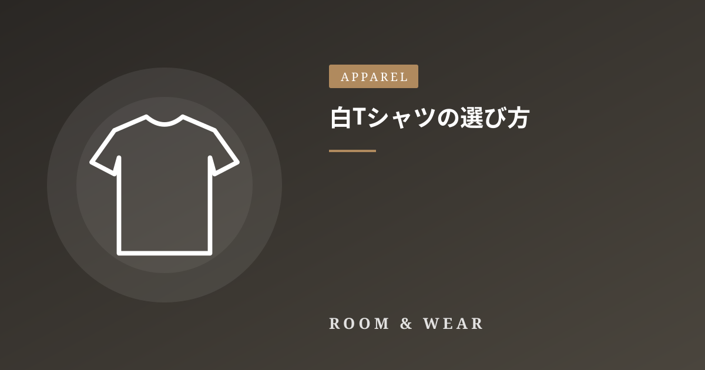

白Tシャツの選び方。生地の厚さとシルエットで印象はここまで変わる

※この記事にはアフィリエイトリンクが含まれています（広告について）。
白Tシャツはシンプルだからこそ、ちょっとした違いが見た目に出ます。「なんとなく安いものを買って、すぐヨレた」という経験がある人も多いのではないでしょうか。ここでは白Tを選ぶときに見るべきポイントを整理します。
生地の厚さ：「オンス」をチェック
Tシャツの生地の厚さは「オンス（oz）」という単位で表されることがあります。目安としては、
- 4oz前後：薄手。インナー向き。透けやすい
- 5〜6oz前後：標準〜やや厚手。1枚でも着やすい
- 7oz以上：かなり厚手。透けにくくハリがある
1枚で着ることが多いなら、5.5〜7oz程度の厚手を選ぶと透けやヨレが気になりにくくなります。
首回り：リブの幅と詰まり具合
首元の「リブ」が太めでしっかりしていると、洗濯を重ねても伸びにくくなります。また、首回りが詰まっているほどカジュアルで男らしい印象に、少し開いているほど軽やかな印象になります。
シルエット：3つのタイプ
ジャストサイズ
体に沿うサイズ感で、清潔感が出やすいタイプ。ジャケットのインナーにも使えます。
リラックスフィット
身幅にゆとりがあり、肩が少し落ちるタイプ。体型を拾いにくく、今っぽい雰囲気になります。
オーバーサイズ
大きめのシルエットで、ワイドパンツと合わせるとトレンド感が出ます。ただし細身のパンツと合わせるとバランスが取りにくいので注意が必要です。
まとめ：まずは厚手×リラックスフィット
迷ったら「厚手」「首元のリブがしっかり」「少しゆとりのあるシルエット」の3点を満たすものを選ぶと、着回しやすく長く使える1枚になります。
この記事に関連するアイテムを探す
Amazonの検索結果ページに移動します。条件に合う商品を比較してお選びください。
- 厚手 白Tシャツ（7oz前後）Amazonで商品を探す
- リラックスフィット TシャツAmazonで商品を探す
価格・在庫・仕様は変わることがあります。購入前にAmazonの商品ページで最新の情報をご確認ください。